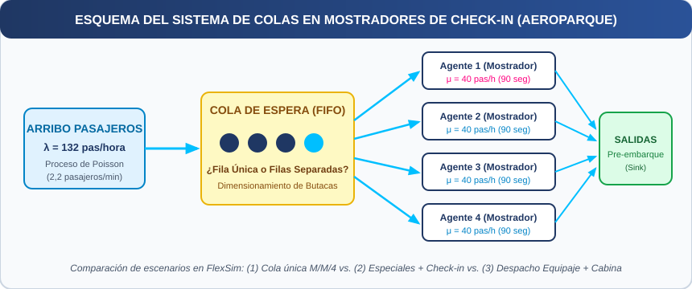

Universidad Católica de Santiago del Estero
Modelos y Simulación — Ciclo Lectivo 2026
.xlsx): Realizar una corrida de simulación de 120 horas efectivas de recolección de datos en FlexSim para cada escenario. La simulación deberá comprender un período de calentamiento previo suficiente para alcanzar el régimen estacionario (el cual no deberá incluirse dentro de las 120 horas de recolección de resultados), o bien justificar que las condiciones iniciales representan adecuadamente el estado estacionario.
.docx): Elabore un informe administrativo y de ingeniería completo con el desarrollo de los puntos anteriores, la justificación de los supuestos adoptados y la comparación crítica entre la teoría de colas y la simulación.
.pptx / PDF): Prepare una presentación ejecutiva para exponer los resultados obtenidos y realizar la demostración en vivo de los modelos en FlexSim el día de la defensa oral.
Como Ingeniero del Departamento de Sistemas e Investigación Operativa de la compañía aérea del caso, la Gerencia de Operaciones Terrestres le ha encomendado estudiar con urgencia las reiteradas quejas de los pasajeros que argumentan perder demasiado tiempo en los mostradores de registro (check-in) antes de ser atendidos en la terminal aeroportuaria.
Criterio de terminología unificada del modelo: Cada mostrador activo será representado como un servidor atendido por un agente. A lo largo del estudio, se empleará el término agente para el recurso humano, mostrador para la infraestructura física de atención y servidor exclusivamente en la formulación matemática de líneas de espera.
Usted ha relevado la operación actual de la terminal y ha desarrollado un modelo de colas para estudiar el caso base, el cual consiste actualmente en una única fila común de espera (disciplina FIFO) y cuatro mostradores atendidos por cuatro agentes ($c = 4$) que operan simultáneamente en el despacho de pasajeros.
Datos del relevamiento operativo inicial: Después de realizar un análisis estadístico preliminar de los registros de arribo en la terminal, usted descubre que los pasajeros llegan durante las horas más concurridas de acuerdo con un proceso de Poisson, con una tasa media de $\lambda = 132\text{ pasajeros/hora}$ ($2,2\text{ pasajeros/minuto}$).
Asimismo, cada agente de mostrador requiere en promedio $90\text{ segundos}$ ($1,5\text{ minutos}$) para registrar a cada pasajero ($\mu = 40\text{ pasajeros/hora}$ por agente, equivalente a $0,6667\text{ pasajeros/minuto}$), pero el tiempo efectivo que tarda es aleatorio y sigue una distribución exponencial.
| Parámetro del Sistema Actual (Escenario Base) | Expresión en Horas | Expresión en Minutos / Segundos | Distribución Estadística |
|---|---|---|---|
| Tasa media de llegada de pasajeros ($\lambda$) | $132\text{ pasajeros / hora}$ | $2,2\text{ pasajeros / min}$ ($1\text{ pasajero cada } 27,27\text{ seg}$) | Llegadas Poisson (Entre arribos Exponencial) |
| Tasa media de servicio por agente ($\mu$) | $40\text{ pasajeros / hora}$ | $0,6667\text{ pasajeros / min}$ ($90\text{ seg por pasajero}$) | Tiempo de servicio Exponencial |
| Cantidad de mostradores activos ($c$) | $4\text{ agentes en paralelo}$ | Fila única común con disciplina FIFO | Modelo multicanal $M/M/4$ |
Confeccione el informe técnico en Word, la planilla de datos en Excel con la simulación de 120 horas efectivas de recolección por escenario y la presentación para el día de la Demo respondiendo bajo las siguientes directivas:

.docx): Informe administrativo y técnico dirigido a la Gerencia de Operaciones de la compañía aérea del caso con los 5 elementos del sistema, memoria de cálculo de los 4 puntos y recomendación final..xlsx): Cálculos teóricos de los escenarios (Base $M/M/4$, Especiales $M/M/1$ + Check-in $M/M/3$, y Bodega $M/M/2$ + Cabina $M/M/1$) junto con la tabla de recolección de datos de la simulación de 120 horas efectivas de recolección en FlexSim y su contrastación con la teoría..fsm): Archivos de simulación configurados y listos para ejecutar en vivo..pptx / PDF): Diapositivas con cuadros comparativos de tiempos de espera, longitudes de cola y cantidad de butacas para la defensa oral.MS2026_TF_Grupo1_Informe.docx (Informe técnico y administrativo completo).MS2026_TF_Grupo1_Datos.xlsx (Planilla estructurada con memoria de cálculo y recolección estadística).MS2026_TF_Grupo1_ModelosFlexSim.zip o archivos .fsm ejecutables individuales.MS2026_TF_Grupo1_Presentacion.pptx o .pdf (Diapositivas de soporte de la defensa oral)..fsm abran y ejecuten sin errores en FlexSim. Archivos corruptos o que no ejecuten invalidan la parte práctica de simulación.La calificación final contempla la coherencia metodológica y el rigor técnico en los cuatro artefactos obligatorios:
| Criterio de Evaluación | Artefacto Asociado | Desempeño Esperado (Nivel Avanzado / Competente) | Ponderación |
|---|---|---|---|
| 1. Formulación del problema y relevamiento de datos | Documento Word (.docx) + Planilla Excel (.xlsx) | Identificación exhaustiva de variables de entrada ($\lambda, \mu, c$), unidades de tiempo homogéneas y supuestos estocásticos del sistema. | 15% |
| 2. Construcción del modelo conceptual | Documento Word (.docx) | Abstracción precisa del sistema real definiendo Entidades, Atributos, Actividades, Estados, Eventos y Notación de Kendall. | 15% |
| 3. Implementación computacional del modelo | Modelo FlexSim (.fsm) | Modelo robusto en FlexSim con lógica consistente, objetos bien configurados (Exponential con Scale = 1/Tasa, ruteo adecuado) y ejecución estable. |
20% |
| 4. Verificación, validación y recolección estadística | Planilla Excel (.xlsx) + Documento Word (.docx) | Registro de la simulación de 120 horas efectivas en FlexSim y procesamiento en Excel, cálculo y comparación de los indicadores operativos ($\rho, L_q, L, W_q, W$) y validación frente a las fórmulas teóricas de colas. | 20% |
| 5. Análisis de resultados y sensibilidad | Planilla Excel (.xlsx) + Documento Word (.docx) | Interpretación profunda de indicadores ($\rho, P_0, L_q, L, W_q, W$, percentiles) y comparación rigurosa entre escenarios. | 15% |
| 6. Conclusiones y toma de decisiones | Documento Word (.docx) + Presentación Demo | Recomendaciones estratégicas, técnicas y de infraestructura sólidamente respaldadas por la evidencia cuantitativa del modelo. | 10% |
| 7. Defensa oral, Presentación y Demo en vivo | Presentación (.pptx/PDF) + Demo FlexSim | Claridad expositiva, dominio técnico ante preguntas de la cátedra y demostración fluida del modelo el día de la Demo. | 5% |